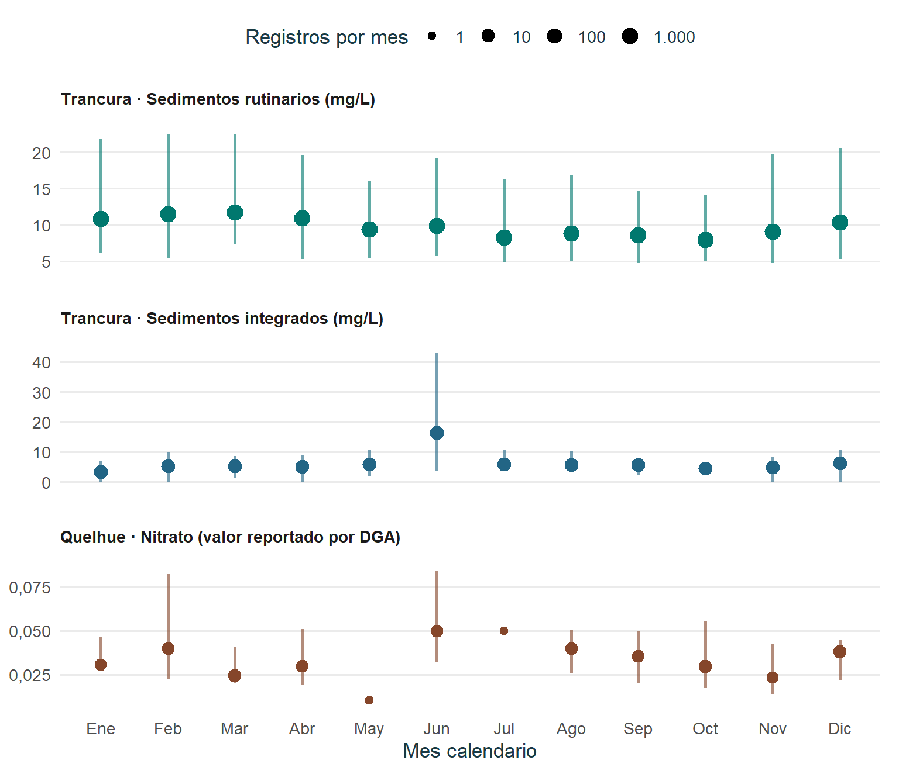

Tres coberturas del suelo, un contraste de caudal y dos registros regionales de calidad de agua
Autor/a
Josefina Ovando León
Pregunta y enfoque
¿Cómo cambia el caudal simulado del río Liucura al usar el Catastro CONAF, MapBiomas 2024 o CLDynamic 2018 como insumo de cobertura del suelo en SWAT+? Primero se contrastan las tres corridas con el caudal observado. Después se examina en qué rango de caudal se concentra el error de CONAF. El cierre presenta las concentraciones observadas de sedimentos en el Trancura y los valores de nitrato en Quelhue como contexto regional.
Se trabajó con las salidas mensuales de SWAT+ entre 1984 y 2019 y con la serie diaria CAMELS-CL de Río Liucura en Liucura (9416001). Un mes observado se considera válido cuando dispone de caudal en todos sus días. El cruce por fecha y la selección de meses presentes en las tres corridas dejan 354 de 432 meses para la comparación. Se usa cha001 como canal candidato. Su correspondencia con la estación está pendiente de verificar en la red de drenaje y mediante el área aportante.
Comparación de las tres coberturas
La Figura 1 muestra cuatro años para distinguir el ciclo y los meses con caudales altos. La Tabla 1 usa todos los meses comparables. RMSE mide cuánto se apartan las simulaciones en m³/s. NSE contrasta el error con la variabilidad observada. PBIAS mide el sesgo acumulado y es negativo cuando hay subestimación. La KGE de Gupta et al. (2009) combina la correlación (r), la razón de desviaciones estándar (alfa) y la razón de medias (beta).
Figura 1: Caudal medio mensual observado y simulado entre 2010 y 2013. Los paneles tienen la misma escala. Los cortes indican meses excluidos del contraste. Fuentes: CAMELS-CL y SWAT+.
Tabla 1: Métricas de ajuste por cobertura para el conjunto común de meses.
Cobertura
Meses
RMSE (m³/s)
NSE
PBIAS (%)
KGE
r
Alfa
Beta
CONAF
354
15.172
0.414
-35.547
0.562
0.824
0.815
0.645
MapBiomas
354
16.477
0.309
-36.319
0.546
0.770
0.854
0.637
CLDynamic
354
18.682
0.112
-38.950
0.400
0.657
0.700
0.611
CONAF presenta el menor RMSE y la mayor KGE de las tres corridas. Su KGE es 0,562 y su PBIAS alcanza -35,5 %. La razón de medias de 0,64 indica que el caudal medio simulado equivale aproximadamente al 64 % del observado en los meses emparejados. Se adopta CONAF como cobertura de trabajo para examinar ese sesgo con mayor detalle.
Dónde se concentra el error de CONAF
Los rangos se definen con los percentiles del caudal mensual observado. Se considera bajo hasta P25 (10,81 m³/s), alto desde P75 (40,39 m³/s) e intermedio entre ambos. Cada mes simulado se asigna al grupo de su observación. Esto permite contabilizar la subestimación de un mes alto dentro del rango alto.
Figura 2: Mediana observada y simulada en cada rango. El segmento muestra la distancia entre ambas medianas. El error mediano de la tabla se calcula a partir de las diferencias de cada mes.
Tabla 2: Desempeño de CONAF por rango del caudal observado. Se puede consultar el detalle de NSE y de los componentes de la KGE en el CSV.
Rango
Meses
Obs. (m³/s)
Sim. (m³/s)
Error mediano (m³/s)
RMSE (m³/s)
PBIAS (%)
KGE
Bajo
89
8.2
2.3
-5.5
5.7
-66.5
0.125
Intermedio
176
25.5
14.3
-8.2
11.7
-31.1
0.399
Alto
89
53.1
36.1
-17.6
24.8
-35.1
0.220
En los meses de caudal bajo, el PBIAS es -66,5 %. En los meses de caudal alto, el error mediano es -17,6 m³/s. Para distinguir ambos efectos se muestran unidades absolutas y relativas. La KGE por rango ayuda a diagnosticar el ajuste dentro de cada tramo de la distribución. Se interpreta junto con la KGE global porque los grupos tienen menor amplitud de caudales que la serie completa.
Estacionalidad observada de sedimentos y nitrato
La DGA midió sedimentos en el río Trancura antes del Llafenco y nitrato en el río Pucón en Balseadero Quelhue. Se agruparon los registros por mes calendario. Los dos métodos de sedimentos aparecen por separado, porque sus frecuencias y protocolos de muestreo difieren. Las barras muestran la dispersión de las observaciones y el tamaño del punto indica cuántos registros entraron al resumen.
Ver código R
fig_estacional

Figura 3: Sedimentos y nitrato observados, agrupados por mes calendario. El punto muestra la mediana y la barra cubre los percentiles 25 a 75. Cada panel tiene escala propia. Fuente: registros históricos de la DGA.
La mayor mediana mensual de sedimentos aparece en Mar en el muestreo rutinario (11,75 mg/L) y en Jun en el integrado (16,45 mg/L). En Quelhue se incluyeron 77 de 106 registros de nitrato. El control de calidad registra 28 resultados bajo el límite reportado y 1 con marca de duda. Estas observaciones quedaron fuera del resumen. Los meses con una sola observación tienen un intervalo reducido al punto. La exclusión de valores bajo el límite puede elevar la mediana de los meses con más observaciones censuradas.
La unidad analítica del nitrato no viene en el archivo DGA, por eso se grafica el valor reportado. Ambos sitios representan otras áreas aportantes y sus registros dan contexto regional. El diagnóstico de desempeño de este trabajo se limita al caudal del Liucura.
Conclusión
La comparación común permite elegir CONAF para las pruebas siguientes y localizar sus errores según el caudal observado. El contraste cuantifica las diferencias entre las corridas disponibles. Para atribuirlas a la cobertura del suelo hay que cotejar las configuraciones de las corridas y confirmar que el canal represente la misma cuenca aportante que la estación 9416001.